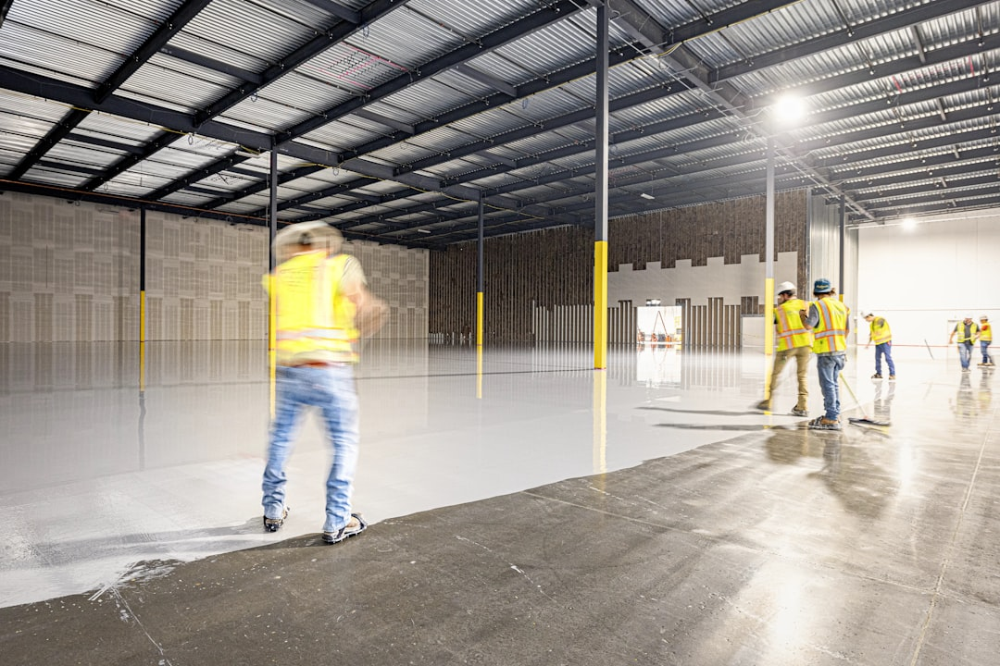

Commercial construction finance funds a build in stages through a series of progress draws, each released as a defined build milestone is reached and verified by a quantity surveyor. Gearing is assessed against both the total development cost and the gross realisable value. Interest is commonly capitalised within the facility through the build period rather than paid from cash flow. Non-bank lenders can consider reduced or nil presale cover where the feasibility and exit strategy are sound.
For local buyers, commercial construction finance This guide explains how the facility is structured, how lenders assess the deal, when a non-bank lender suits better than a mainstream bank, and what the full capital stack can look like across a commercial development project.
Commercial Construction Finance Explained
Rather than advancing the full loan amount upfront, a commercial construction facility releases funds through a series of draws tied to the build program. Each draw is triggered when a defined stage is reached, typically confirmed by a quantity surveyor report. A retention is held back and released only at practical completion, keeping the lender's exposure aligned with actual project progress.
This structure benefits the borrower as well. Because interest accrues only on the drawn balance, the cost of capital during the build is lower than if the full facility were advanced on day one. For developers managing cash flow across a multi-stage commercial project, this is a meaningful efficiency. For a fuller explanation of how draw structures operate across different project types, the guide to construction loans in Australia covers the mechanics in detail.
Dual Gearing: LTC and GRV
Commercial construction lenders assess gearing using two separate metrics: the loan to total development cost (LTC) and the loan to value against the gross realisable value (GRV). Tracking both gives a more complete picture of feasibility than a single loan-to-value snapshot. LTC shows how much of the project cost the lender is covering; GRV shows the headroom between the facility and the end value of the completed asset.
A project with strong presale cover and conservative gearing on both measures will generally attract keener pricing. A higher-leverage structure with limited presale cover is more likely to require a non-bank lender and will carry a higher cost of capital, reflecting the greater risk the lender accepts. Pricing and leverage shift with each of these variables rather than following a fixed schedule.
When a Non-Bank Lender is the Right Fit
Major banks apply conservative policy on presale requirements and leverage. When a commercial project falls outside those parameters, a non-bank lender assesses the deal on its merits rather than against a rigid credit template. Common situations where non-bank lending is the more practical route include: higher leverage than standard bank policy allows; presale cover below the threshold a bank requires; a tighter settlement or build timeline that a major bank cannot meet; or a non-standard project structure where the numbers stack up but the deal does not fit a bank's standard box.
Non-bank lenders assess feasibility and exit more holistically. The exit strategy matters as much as the raw gearing figures: lenders want to understand whether repayment comes through presales, a refinance into residual stock finance, or a bulk sale, and whether that timeline is realistic given the build program.
Construction Finance Versus the Broader Development Stack
A construction loan is the senior facility that funds the build itself. Development finance is a broader strategy that may layer in mezzanine debt, preferred equity or stretched senior to lift total leverage across both land acquisition and construction. Many projects begin as a single construction facility and evolve into a more layered capital stack as the feasibility is refined. Construction loans in Australia covers the relationship between these instruments in more depth.
A project with strong presales and modest gearing may need nothing beyond a senior construction facility. A higher-leverage project seeking to minimise equity contribution may use mezzanine finance or preferred equity sitting behind the senior tranche. Understanding where a project sits in that spectrum shapes which lenders are relevant and what the total cost of capital looks like across the full stack.
Commercial Asset Classes This Applies To
Commercial construction finance of this type is business-purpose lending and is not consumer credit. It is relevant to developers funding retail, office, hotel and short-stay projects, as well as industrial builds where tenant demand supports the feasibility. It is also relevant to builders who carry their own development risk on a project rather than building under a fixed-price contract for a third-party developer.
This is distinct from residential construction lending for owner-occupiers, which is covered separately by the ASIC Moneysmart home loans resource. Commercial construction finance is assessed on project feasibility and exit strategy, not on personal income serviceability. The lender's question is whether the project generates enough end value to repay the facility, not whether the borrower's salary supports the repayments.
Capital Structure Across the Project Lifecycle
A commercial development project typically passes through several funding phases. Land acquisition may be funded through a bridging facility or caveat loan. The construction phase draws down the senior facility against the build program. Once practical completion is reached, unsold stock can be refinanced into a residual stock loan to release the equity tied up in finished but unsold product while the sales campaign runs its course.
Mezzanine finance or preferred equity may sit behind the senior lender at any stage where the developer wants to lift total leverage and reduce equity contribution. Each layer of the stack has different pricing, security ranking and risk profile. Structuring the capital stack correctly from the outset avoids refinancing pressure mid-build and protects the return on equity that justifies the project in the first place.
- Establish the dual gearing position. Calculate the loan against total development cost and the loan against gross realisable value before approaching lenders. Both figures shape which lenders are relevant and what pricing is realistic.
- Confirm the presale cover position. Assess the level of unconditional presale cover against the facility amount. Projects with lower presale cover may suit a non-bank lender who can assess feasibility and exit more holistically.
- Map the exit strategy clearly. Document whether repayment comes through presale settlements, a refinance into residual stock finance, or a bulk sale. Lenders assess whether the timeline is realistic given the build program.
- Determine whether a layered stack is needed. If the senior facility alone does not provide sufficient leverage, consider whether mezzanine finance or preferred equity sitting behind the senior tranche is appropriate for the project's return on equity profile.
- Appoint a quantity surveyor early. Progress draws are tied to quantity surveyor verification of build milestones. Appointing a QS early avoids delays in draw releases once construction is underway.
- Structure the facility with retention in mind. A retention held back until practical completion is standard. Factor the timing of retention release into the project's cash flow model to avoid a shortfall in the final stages.
| Factor | Senior construction only | Layered development stack |
|---|---|---|
| Typical use | Projects with strong presales and conservative gearing | Higher-leverage projects minimising equity contribution |
| Capital layers | One senior facility | Senior plus mezzanine or preferred equity |
| Complexity | Lower: single lender relationship | Higher: multiple lenders, intercreditor arrangements |
| Cost of capital | Lower overall | Higher, reflecting subordinated layers |
| Exit options | Presales, residual stock refi, bulk sale | Same exit options, with more lenders to repay in order |
Common questions
What is the difference between a commercial construction loan and development finance? A construction loan is the senior facility that funds the build itself, with draws released against the build program. Development finance is a broader term that may also layer in mezzanine debt, preferred equity or stretched senior to cover land acquisition as well as construction. A project may start with a single construction facility and evolve into a layered development stack as the structure is refined.
Why do lenders use both LTC and GRV instead of a single LVR? Loan to total development cost (LTC) shows how much of the project cost the lender is funding. Loan to value against gross realisable value (GRV) shows the headroom between the facility and the completed asset's end value. Using both gives a clearer picture of feasibility than a single point-in-time snapshot, and reflects the way non-bank lenders actually assess commercial construction risk.
Who does commercial construction finance apply to? It applies to developers funding commercial property including retail, office, hotel and industrial, as well as builders carrying their own development risk. It is business-purpose lending only. It does not apply to owner-occupied home construction, which is a separate category of consumer credit.
This guide covers commercial construction finance as business-purpose lending for commercial property development in Australia: retail, office, industrial, hotel and related asset classes. It does not constitute financial advice. It does not apply to owner-occupied residential construction.